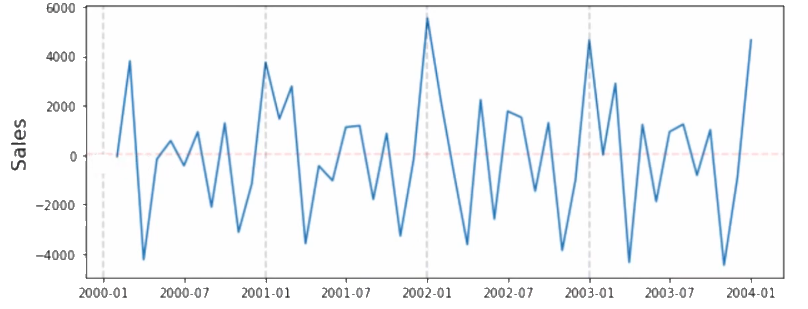
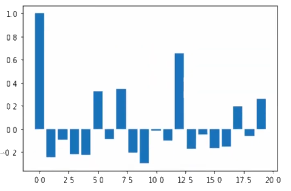
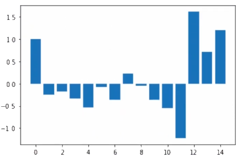
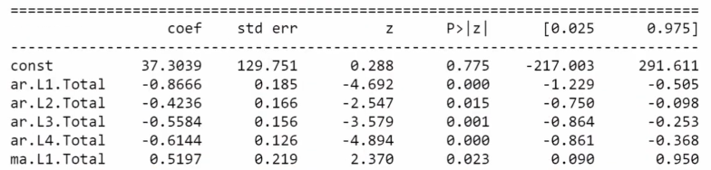
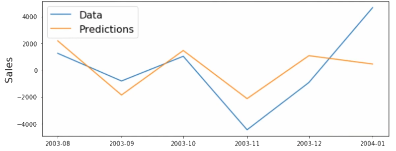

| Article Year -- 2020
| Article Year -- 2020
 | Tags --
arma |
autoregressive |
moving average |
machine learning |
ml |
time series |
| Tags --
arma |
autoregressive |
moving average |
machine learning |
ml |
time series |
The ARMA Model is a merger between the AR (Autoregressive) and MA (Moving Average) models. By combining the two, we produce a more sophisticated model for making predictions on time series data. The AR part makes the variables be regressed onto their own past values, while the MA part takes unexpected effects into account. As such, the ARMA model regresses the time series against the previous values & the previous errors, also known as 'Shock Terms'.
Note that the time series used must still be stationary for the model to be effective.
So what does the model consist of? Let's take a look at each of the parts to gain a better understanding of the model as a whole.
AR: Uses a linear combination of past values of the variable we want to predict. The 'Auto' part indicates that it is a regression of the variable onto itself.
MA: Uses past forecast errors in a linear regression of the variable to make predictions.
Now that we have a rough understanding of each part, let's dive deeper into an example of the ARMA model in action. Let's say we want to predict how many lightbulbs will be sold given some past sales numbers from previous months. First, let's take a look at the equation below, which corresponds to an ARMA(1,1) model.
The orders (1,1) of the model, determines the number of time lags that we include for each part. Thus if we change the model to have the orders of (2,1), then we include time lags from both last month and 2 months ago in the equation. These are normally given as (p,q), with 'p' determining the order of the AR part and 'q' determining the order of the MA part. By excluding one of these orders, you can create either an AR or an MA model.
$$l_t=\beta_0+\beta_1l_{t-1} + \phi_1\epsilon_{t-1}+\epsilon_t$$
To gain a better understanding, let's define each term as it is written:
lt is the number of lightbulbs that we should sell this month. In other words, this is the number that we want to predict using our ARMA model.
$B$0 is a coefficient or constant that we include - also called a 'Shock term'. It is a random value and not related to the related to the other shocksterms.
$B$1 is the autoregressive coefficient at lag 1.
lt-1 is the number of light bulbs that was sold last month (1 from the current month).
$\phi$1 is another coefficient or constant that we include.
$\epsilon$t-1 is the error, or 'Shock Term' from the last month (1 from the current month).
$\epsilon$t is the error, or 'Shock Term' from the current month.
There are some unknowns in this equation, such as the light bulbs that we need to sell this month and the error for the current month. However we do have acccess to all past knowledge. As such we can form a new equation for our predictions without these unknown values.
$$\hat{l_t}=\beta_0+\beta_1l_{t-1} + \phi_1\epsilon_{t-1}$$
Now we have an equation to help us predict the number of light bulbs we should sell this month.
How do you determine the AR and MA orders?
To determine the order values, we make use of Autocorrelation (ACF) for the MA part and Partial Autocorrelation (PACF) for the AR part. Our goal is to use lags that are correlated the most to the value we want to predict. So how do you use these methods for determining the orders?
ACF: Measures the moving average for the time series and therefore helps determine the MA order.
How to use the model in Python?
The 'statsmodel' package contains a library for using the ARMA model (and similar time series models) in python. You can read the documentation here.
As an example, let's say we have a time series that has been made stationary and for which we want to predict future values.  Before we can begin creating the ARMA model, we first need to determine the orders for the AR and MA parts (p,q). To this end, we use ACF and PACF. Remember that the ACF determines the order of the MA part, while the PACF determines the order of of the AR part.
The Autocorrelation (ACF) plot below indicate that we should use an order of 1 for the MA part. We want to look for lags that 'stick out' and in this case the lag at 1 is pretty strong (we ignore the lag at the 0th position). One could also argue that the lags at 3 and 4 are strong, so we might also have chosen an order of 3 or 4. 
The Partial Autocorrelation (PACF) plot below indicate that we should use an order of 4 for the AR part. The lags are quite strong in the 4th position, but then trail off before picking up again at around 11-12 lags, which could indicate some yearly seasonality. 
Now that we have our orders defined, we can begin building the model and feeding it some training data that we have. To create the model in python you first need to import it from statsmodels.tsa.arima_model.
from statsmodels.tsa.arima_model import ARMA
model = ARMA(train_data, order=(4,1))
To fit the ARMA model to the training data, simply call the fit function. We then also print a summary of the resulsts from the model.
model_fit = model.fit()
print(model_fit.summary())
One part of this results summary is the table of coefficients. This tells us the values of out coefficients and whether they are significant or not. You might notice that there are 4 AR coefficients at the different time lags, corresponding to the order that we defined. All the values are negative, which indicates that the value for our current time period is negatively correlated with the lags at 1-4. The MA coefficient is positive, which indicate a positive correlation to our current time period for lag 1. The P > | z (P greater than absolute value of z) tells us how significant each coefficient is in our model. The smaller the value, the more significant in its predictive power - a value of 0.05 or less is preferred.  This gives us a final model, with the newly found coefficients plotted in:
$$\hat{y_t}=-0.87y_{t-1}-0.42y_{t-2}-0.56y_{t-3}-0.61y_{t-4}+0.52\epsilon_{t-1}$$
We can now use this model to make our predictions. In python we do this by calling the predict function on the model, setting the start and end dates for the predictions to be made.
predictions = model_fit.predict(start=pred_start_date, end=pred_end_date)
Below you can see the predictions made by the model in contrast to the actual test data. You'll notice that the model performs quite well in predicting the shape, but that it leaves some gaps towards the end, which will needed to be corrected for.



{kind=link}
{kind=link}
{kind=link}
{kind=link}
{kind=link}
{kind=link}